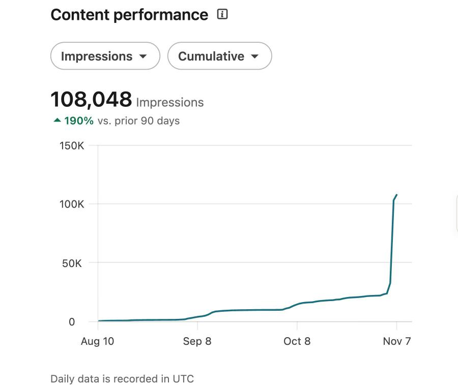

About
I paid $45 a month for an AI head of content. It could not read my meetings or my Slack, and it forgot my corrections. So in a four-hour hackathon I rebuilt the loop as a Claude plugin.
Open Stanley reads your week, finds the stories in it, drafts posts in your voice, checks them against the research on what works on LinkedIn now, schedules them from your own browser, and tells you the next day how they did. It is free and open source, and your material stays in a folder on your computer.
How it works
- On Saturday it reads my meetings, Slack, mail, calendar, and notes, and writes down what happened, with a link to the source.
- Every morning it asks me one question about one of those stories. I answer with a voice note.
- On Sunday I get three drafts in my voice. Each one is checked against the research on what LinkedIn rewards this year. If I wrote a post myself, it checks mine instead.
- I say yes to the text. It schedules the post from my own browser.
- Every night it reads the numbers and writes them next to the story that made the post.
- Every post is part of an experiment. When I edit a draft, the edit becomes a rule for the next one.
$ stanley-audit drafts/2026-11-05-yc-partner.md --platform linkedin --has-image
landing: opens-first-person=yes fold-complete-thought=yes named-entity-early=yes
number-or-receipt=yes ends-on-question=yes has-image=yes length-band=yes
RESULT: PASS
Results
I am the first user. Under 5K followers, running it every day since September 2026. This is my LinkedIn analytics page on November 6: 44,845 impressions in 90 days, 20% more than the 90 days before. My two biggest posts did about ten times my usual.

Strategies
Your own stories come first. The rest are for thin weeks and for new accounts. Each one is a skill in the plugin, and the numbers decide which ones stay.
- Your storiesWhat happened to you this week, with the source.
- AtlasYour industry mapped from public data. Works from day one.
- ObservationA screenshot of something odd and one plain line about it.
- ExperimentA small test you ran. The raw outputs are saved.
- SeriesA build log, each post linked to the one before.
- RepackageThe shape of your best post with a new story in it.
- StudyWhat works for creators in your field. Weekly teardowns.
- LongformOne long piece a month, cut into posts.
- YoursSend a tactic with your numbers. If it holds up, it goes in with your name on it.
Compared
| Stanley, Taplio, Supergrow | Open Stanley | |
|---|---|---|
| Price | $29 to $149 a month | $0 on top of your Claude plan |
| Where a post comes from | your old posts and a topic | what happened to you this week |
| Your material | their servers | a folder on your computer |
| Sources | no | every number and name links to one |
| Your edits | "learns your voice" | saved, turned into rules, dropped when you override them |
| Setup | text a number | install a plugin |
The paid tools are easier to start with and have mobile apps. Full comparison.
Install
# Claude Cowork Plugins → Add → Add marketplace → Harmix/open-stanley → install Open Stanley # Claude Code /plugin marketplace add Harmix/open-stanley /plugin install open-stanley@open-stanley # Codex, or any agent that reads SKILL.md npx skills add Harmix/open-stanley
Then say "set up Stanley". It reads your last 40 to 60 posts, tells you why your top three worked, and builds a voice profile from your own words.